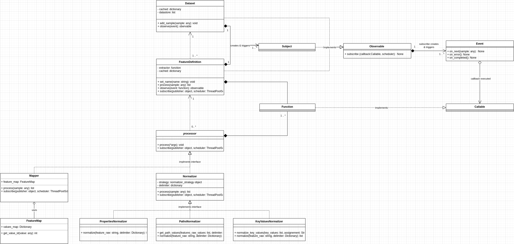

Library Architecture
This section helps you to understand the core components of the Artifician.
The Architecture diagram represents the relationship between different components of the Artifician.
{kind=link}
Events
Events are the part of the life cycle of the program. The entity which creates and triggers events is called as publisher, and entity which listens (observes) to those is called as an observer. Events makes whole systems decoupled and very flexible. Events are nothing but the python functions.
Dataset
Dataset is responsible for storing and maintaining the prepared data. Dataset has events which can be observed by any of the observer. Dataset contains the pandas.DataFrame object to store the prepared data.
Feature Definition
Feature Definition is responsible for preparing feature data. Feature Definition extract the Feature value from the sample received, using custom extractor function and then the feature value is processed by the processors if any. Feature Definition can act as a both publisher and the observer. It can create events of its own, as well as subscribe to events created by publishers.
Processors
Processor is responsible for processing data. Processor subscribes to the events created by publishers.
RxPY
For publishing and subscribing events we are using a RxPY library which is a set of libraries for composing asynchronous and event-based programs using observable sequences and pipable query operators in Python.